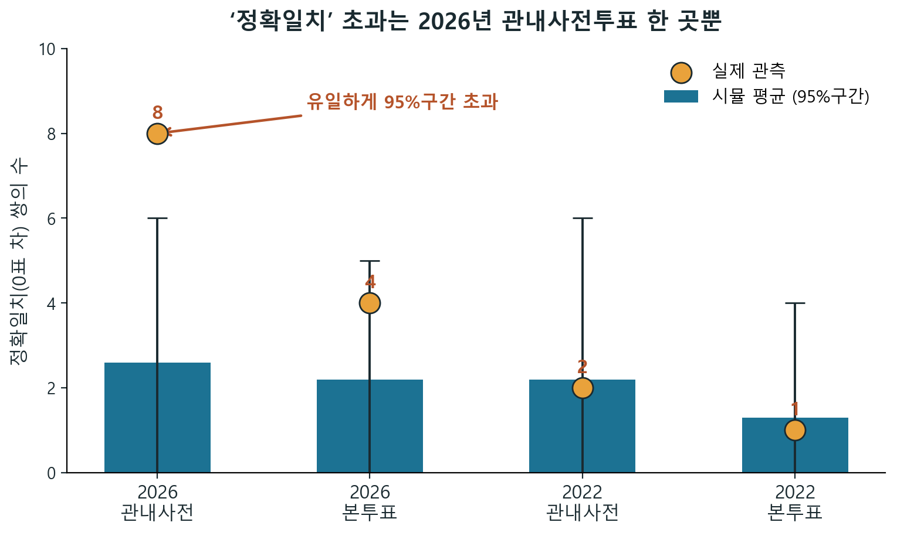

특정 숫자와 넓은 사건은 다르다
“하필 3,030표와 1,440표”가 나온 사건과 “어떤 숫자든 두 후보 득표수가 각각 같다”는 사건은 확률 계산이 다르다.
결론부터
“하필 3,030표와 1,440표”가 나온 사건과 “어떤 숫자든 두 후보 득표수가 각각 같다”는 사건은 확률 계산이 다르다.
송도1동·송도2동처럼 가까운 두 곳이 같은 경우와, 특정 광역권 안에서 여러 쌍이 생기는 경우는 같은 현상이지만 해석해야 할 범위가 다르다.
광주·전남에 동일득표 쌍이 많이 보이는 것은 단순한 전국 사후탐색 설명만으로 끝낼 수 없다. 지역별 관측치와 광역권별 모델 확률을 따로 본다.
출발 사례
두 선거구의 사전투표자 수는 4,548명과 4,540명으로 8명 차이였다. 민주당과 국민의힘 득표수가 동시에 같아지려면 이 8명 차이는 기타 후보 쪽에서 흡수된다.
이 조건을 반영하면, 단순히 “특정 숫자”를 맞히는 문제가 아니라 “두 주요 후보의 득표수가 동시에 같아지는 넓은 사건”으로 계산해야 한다.
의심 포인트
송도1동·송도2동처럼 이름과 생활권이 가까운 투표구에서 두 후보 득표수가 동시에 같아진 사건이다.
특정 권역 안의 투표구들이 비슷한 정당 득표 구조를 공유하면 같은 득표 조합이 반복될 수 있다.
광주·전남은 정당 득표율이 좁은 범위에 몰리고, 작은 읍면 투표구가 많아 같은 조합이 생길 기회가 있다.
전국데이터
| 데이터셋 | 행 수 | 분할동 | 같은 구시군 | 광역권 | 전국 |
|---|---|---|---|---|---|
| 대선 14대·본투표 | 3,659 | 0 | 0 | 0 | 0 |
| 대선 15대·본투표 | 3,739 | 0 | 0 | 0 | 0 |
| 대선 16대·본투표 | 3,515 | 0 | 0 | 0 | 1 |
| 대선 17대·본투표 | 3,576 | 0 | 0 | 1 | 1 |
| 대선 18대·본투표 | 3,479 | 0 | 0 | 0 | 1 |
| 대선 19대·본투표 | 3,491 | 0 | 0 | 2 | 2 |
| 대선 19대·사전투표 | 3,491 | 0 | 0 | 7 | 15 |
| 대선 20대·본투표 | 3,510 | 0 | 1 | 2 | 4 |
| 대선 20대·사전투표 | 3,510 | 0 | 0 | 1 | 2 |
| 대선 21대·본투표 | 3,554 | 0 | 1 | 3 | 6 |
| 대선 21대·사전투표 | 3,554 | 0 | 0 | 0 | 0 |
| 지선8회(2022)·본투표 | 3,510 | 0 | 0 | 1 | 2 |
| 지선8회(2022)·사전투표 | 3,510 | 0 | 0 | 2 | 5 |
| 지선9회(2026)·본투표 | 3,558 | 0 | 0 | 4 | 7 |
| 지선9회(2026)·사전투표 | 3,558 | 1 | 1 | 8 | 10 |
| 총선 18대·본투표 | 3,542 | 0 | 0 | 0 | 1 |
| 총선 19대·본투표 | 3,535 | 0 | 0 | 0 | 18 |
| 총선 20대·본투표 | 3,466 | 0 | 0 | 1 | 2 |
| 총선 20대·사전투표 | 3,466 | 0 | 1 | 9 | 24 |
| 총선 21대·본투표 | 3,484 | 0 | 0 | 2 | 2 |
| 총선 21대·사전투표 | 3,484 | 0 | 0 | 0 | 1 |
| 총선 22대·본투표 | 3,546 | 0 | 1 | 1 | 4 |
| 총선 22대·사전투표 | 3,546 | 0 | 0 | 2 | 4 |
각 칸은 발견된 동일득표 쌍(pair) 수만 표시한다. 전체 비교 기회 수와 백만 쌍(pair)당 비율은 데이터 사전에 남겼다. 이 사이트의 광역권 기본값은 분석 목적상 광주와 전남을 하나의 권역으로 묶은 기준이다.
확률 모델
여기서 말하는 확률은 선거 전 예측확률이 아니라, 공개 데이터에서 관측된 지역별 구조를 받아들였을 때 같은 패턴이 얼마나 자주 재생성되는지 보는 사후예측(posterior predictive) 평가다. 기본 모델은 2026년 관측 구조를 조건으로 두고, 2022년 사전투표율 정보는 별도 민감도 분석으로 확인한다.
200,000회 정밀화 기준 모델별 범위다. 기본 해석은 더 보수적인 모델 2: 지역적응형 사후예측 w=0.7의 약 1 / 9,100을 중심에 둔다.
A: 분할동 쌍(pair)에서 동일득표쌍이 1개 이상 발견된다.
B: 광역권 쌍(pair)에서 동일득표쌍이 8개 이상 발견된다.
두 결과는 겹치는 비교쌍과 지역별 잠재요인을 공유하므로
P(A) * P(B)가 아니라 같은 시뮬레이션 반복에서
P(A∩B)를 직접 센다.
사건별 확률
아래의 P(A)와 P(B)는 각각의 사건을 따로 본 확률이다. 최종 결합 평가는 두 값을 곱하지 않고, 같은 반복 안에서 두 사건이 동시에 나온 비율 P(A∩B)를 직접 센다.
| 모델 | P(A) 분할동 1쌍 이상 |
P(B) 광역권 8쌍 이상 |
P(A∩B) 함께 발생 |
P(B|A) A가 나온 반복 중 B |
반복 수 |
|---|
선거 종류, 후보 묶음, 행정구역, 비교 범위, 동일득표 정의는 관측 데이터와 같은 기준으로 고정했다.
각 투표구(분석 행)의 관내사전투표자 수와 후보별 득표율을 다시 생성하고, 매 반복마다 동일득표 쌍(pair) 수를 새로 센다.
같은 구시군 안에서는 관내사전투표율과 후보별 득표율이 공통 구조를 따른다고 두는 기준선 모델이다.
투표구별 관측값과 구시군 평균을 가중치 w로 섞어 지역 구조를 보존한다.
w=0.7은 투표구 고유값 70%, 구시군 평균 30%를 반영하고,
w=0.9는 투표구 고유값을 더 강하게 반영한 민감도 설정이다.
기본 분석은 2026년 해당 투표구의 관내사전투표율과 같은 구시군 평균을 w로 섞는다.
2026년 해당 투표구의 후보별 득표율과 같은 구시군 후보별 평균을 w로 섞는다.
그 사전분포를 받아들인 뒤, 각 반복에서 가상의 투표 결과를 다시 뽑고 동일득표 쌍 수를 새로 센다.
따라서 표의 확률은 선거 전 예측값이 아니라, 관측된 지역 구조 안에서 같은 사건이 얼마나 자주 재현되는지에 대한 값이다.
사전투표율 사전분포만 2022년 같은 읍면동 정보로 바꿔도 범위별 방향이 크게 달라지지 않는지 확인한다.
지역별 정치 성향과 투표 참여 구조를 완전히 지우지 않고, 관측 구조 안에서 재현성을 묻기 위해서다.
지역별 분석
2026년 시·도지사 관내사전투표에서 광역권 기준 동일득표 쌍은 광주·전남 5쌍, 전북 2쌍, 인천 1쌍으로 관측됐다. 위의 확률 모델을 사용해, 관측 개수뿐 아니라 모든 광역권에서 1개 이상부터 10개 이상까지 나올 확률을 따로 비교한다.
광주·전남이 가장 많지만, 이는 광주와 전남을 하나의 광역권으로 묶은 정의, 작은 읍면 단위, 비슷한 후보별 득표율 구조가 함께 만든 결과일 수 있다.
| 광역권 | 관측 | 모델 2 평균 | 1개 이상 | 2개 이상 | 3개 이상 | 4개 이상 | 5개 이상 | 6개 이상 | 7개 이상 | 8개 이상 | 9개 이상 | 10개 이상 | 비교 가능 쌍 |
|---|
확률은 모델 2(Model 2): 지역적응형 사후예측 w=0.7로 50,000회 반복했을 때 각 광역권에서 n개 이상 동일득표 쌍이 나올 비율이다. 지역별 지지율, 선거인 규모, 투표구 수가 달라 광역권마다 기준 확률도 크게 달라진다.
분석 기준
민주계열 후보 득표수와 보수계열 후보 득표수가 둘 다 같은 쌍(pair)만 센다. 한쪽 정당 득표가 0인 경우를 포함한 완화(loose) 집계는 참고값으로만 둔다.
읍면동명에서 숫자 표현을 제거했을 때 같은 이름이 되는 분할동 기준이다. 송도1동·송도2동 같은 사례를 가장 좁게 근사한다.
하나의 쌍(pair)을 미리 지정한 확률과 전국의 많은 쌍을 훑은 뒤 발견하는 확률은 다르다. 표는 발견 쌍 수를 먼저 보여주고, 비교 기회 수는 데이터 사전에 둔다.
유사 분할동 결과와 광역권 결과는 겹치는 비교쌍과 같은 지역별 잠재요인을 공유한다. 두 사건을 독립 증거처럼 단순 곱하지 않고, 같은 반복 안에서 함께 세었다.
해석 원칙
동일득표 쌍은 실제 전국 데이터에서 관찰되는 현상이며, 비교 범위와 사후탐색 여부를 반영하면 “상상할 수 없는 확률”로 단정하기 어렵다.
이 결과만으로 특정 선거가 정상 또는 비정상이라고 판정하지 않는다. 개표 절차, 원자료 진위, 행정 실수 가능성은 별도의 증거와 검증이 필요하다.
의혹을 억누르기보다, 같은 사건 정의와 같은 데이터로 누구나 다시 세어볼 수 있게 만드는 것이 이 사이트의 목적이다.
확인 질문
특정 숫자까지 고정하면 확률은 작아진다. 그러나 실제 사람들이 놀라는 사건은 두 후보의 득표수가 각각 같다는 넓은 사건에 더 가깝다.
전국의 수십만 pair를 훑으면 하나 이상의 일치가 나타날 기회가 크게 늘어난다. 이 차이를 빼면 확률이 과장될 수 있다.
그대로 곱하면 독립 가정이 과해질 수 있다. 유사 분할동을 제외한 나머지 광역권만 따로 보면 다른 질문이 되며, 이 사이트는 중복을 피하기 위해 결합사건을 같은 반복 안에서 계산한다.
모델 검증
모델 2(Model 2): 지역적응형 사후예측 w=0.7로 ±1, ±2, ±3표 이내의 근접 일치까지 보면 실제 관측은 예측 구간에 대체로 들어온다. 반면 ±0, 즉 정확히 같은 쌍은 예측 평균보다 높다.

| 기준 | 실제 | 시뮬레이션 평균 | 95% 구간 |
|---|
따라서 모델이 전체 득표 분포를 완전히 못 맞춘다기보다, 정확 일치 지점에 추가 설명이 필요한 신호가 있다고 보는 편이 더 정확하다. 이 신호만으로 원인을 단정하지는 않는다.
한계
동일득표 pair는 이상징후를 살펴보는 지표이지, 원인이나 부정의 직접 증거가 아니다.
시뮬레이션 결과는 사전분포(prior), 지역적응형 가중치 w, 비교 범위 같은 가정에 의존한다.
공개 개표자료의 집계 단위를 사용하므로 개별 투표 행위나 현장 절차를 직접 분석하지 않는다.
지역 인구 구조 변동, 신도시·농어촌 구성 차이, 선거구 개편, 후보 구도 변화는 모델 안에 완전히 담기 어렵다.
결론은 “관측된 패턴이 모델 안에서 얼마나 재현되는가”에 제한되며, 법적·인과적 판단으로 확장하지 않는다.
자료와 재현성
원본 파일은 중앙선거관리위원회 개표자료이며, 분석용 데이터는 같은 스크립트로 다시 생성할 수 있다. 사이트의 수치는 재생성된 `equal_pair_counts.csv`와 `pair_counts.csv`의 값을 기준으로 했다.
코드와 사이트 소스는 GitHub 저장소에 공개했고, 원본 입력 데이터와 검증용 산출물은 GitHub Release의 ZIP 파일로 분리해 두었다.